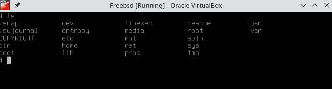
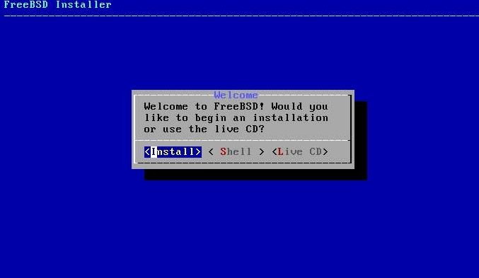
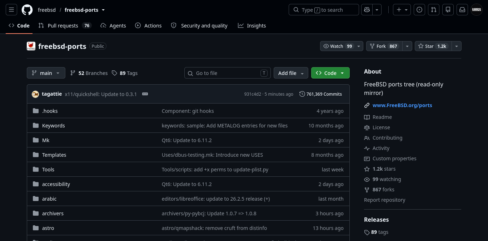
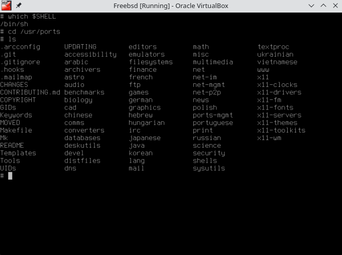

Apa itu FreeBSD?
FreeBSD adalah salah satu turunan dari Berkeley Software Distribution (BSD) dan merupakan sistem operasi penuh.
"The BSD license is the ultimate open source license: do whatever you want with it, just don't sue us."
— Marshall Kirk McKusick, pemimpin riset BSD
Pada artikel ini, kita akan bahas tentang BSD terutama FreeBSD, membuat package di FreeBSD dan pengaruhnya dalam terciptanya MacOS.
Berkeley Software Distribution

Jadi apa itu BSD? Berkeley Software Distribution adalah sistem operasi mirip Unix yang pertama kali dikembangkan oleh Computer Systems Research Group (CSRG) di Universitas California, Berkeley, mulai akhir tahun 1970-an
BSD dibuat, dikembangkan, dan digunakan secara “Bebas” sebagai perlawanan terhadap lisensi UNIX yang dimiliki oleh AT&T dan oleh karena itu BSD mempunyai lisensi tersendiri yang memungkinkan setiap orang bebas melakukan pengembangan, dan menggunakan kode sumber BSD.
Baca Juga: Linux: Sistem operasi yang bukan sistem operasi
FreeBSD
Lalu apa bedanya dengan FreeBSD? FreeBSD adalah turunan dari BSD yang sangat kuat dalam networking.
Jika dibedakan dengan Linux, perbedaannya adalah Linux memiliki networking ecosystem yang lebih luas dan lebih powerful untuk infrastructure modern, sedangkan BSD memiliki networking stack dan tooling yang sangat matang untuk firewall, router, dan network appliance.

Jika dilihat sekilas, filesystem dari FreeBSD memang mirip dengan Linux. Tetapi jika diperhatikan, ada folder rescue dan file entropy. Folder rescue berisi alat atau binary cadangan jika terjadi kerusakan pada sistem. Sementara file entropy aku kurang tahu isinya apa, tapi ucap orang-orang di internet, entropy digunakan untuk kriptografi acak atau bisa dibilang mengamankan data seperti SSH.
Instalasi FreeBSD

Jika kau membaca dari atas, aku sempat berkata bahwa FreeBSD merupakan sistem operasi penuh. Kenapa? berbeda halnya dengan Linux, FreeBSD memiliki Kernel, Userland Tools dan bahkan Driver yang built-in. Karena itulah FreeBSD bisa disebut sebagai sistem operasi.
Untuk instalasi FreeBSD sebenarnya cukup gampang, hanya perlu next-next saja. Tetapi yang terpenting saat instalasi adalah jaringan internet. Jujur saja aku harus menginstall dua kali karena saat tidak ada jaringan internet, entah kenapa tidak bisa boot.
Setelah selesai menginstall FreeBSD, nanti akan diminta untuk login, tinggal login saja dengan root atau dengan user yang sudah kau buat. Perlu dicatat juga bahwa setelah membuat user baru, ubah visudo agar user bisa menjalankan perintah sebagai root. Setelah login, coba jalankan perintah:
which $SHELLKau akan menyadari bahwa FreeBSD menggunakan "sh" dan bukan "bash".
Membuat Package di FreeBSD

Jujur saja aku agak bingung dengan cara kerja dari FreeBSD beserta ports collectionnya (ports collection tuh semacam koleksi resmi dari FreeBSD yang menyimpan Makefile dan lain-lain). Di sini akan kujelaskan sejauh pengalamanku. Untuk membuat package FreeBSD, masukkan perintah berikut:
git clone https://git.freebsd.org/ports.git /usr/portsTunggu sampai selesai dan jika sudah selesai, masukkan perintah
cd /usr/portsMengingat ini berada di file sistem, aku sarankan untuk berada dalam mode root. Setelah masuk ke folder ports, coba lihat foto di bawah ini, akan ada banyak sekali ports atau bisa dibilang aplikasi.

Setelahnya, cukup buat folder misalnya folder misc/namaaplikasi. Lalu di dalam folder tersebut, cukup buat Makefile dan isi dengan konfigurasi aplikasimu. Sebagai contoh di sini aku menggunakan project Ferminal yang kubuat dengan python. Kurang lebih isi dari Makefilenya seperti berikut:
PORTNAME=ferminal
DISTVERSION=1.4.2
CATEGORIES=misc
DISTNAME=$(PORTNAME)-$(DISTVERSION)
MAINTAINER-rangga19sj@gmail.com
COMMENT=Custom Wrapper CLI to make your work faster
WWW=https://github.com/RangS-1/Ferminal
LICENSE=MIT
USE_GITHUB=yes
GH_ACCOUNT=RangS-1
GH_PROJECT=Ferminal
GH_TAGNAME=v$(DISTVERSION)
USES=python
USE_GITHUB=yes
USE_PYTHON-autoplist pep517
RUN_DEPENDS=
$(PYTHON_PKGNAMEPREFIX)colorama>0:devel/py-colorama@$(PY_FLAVOR)
$(PYTHON_PKGNAMEPREFIX)prompt-toolkit>0:devel/py-prompt-toolkit@$(PY_FLAVOR)
include <bsd.port.mk>Inti dari kode tersebut adalah Makefile mengambil file dari Github release berdasarkan versi, lalu build python dengan autoplist dan PEP517. Setelah membuat Makefile, lanjut buat pkg-descr. pkg-descr berisi deskripsi dari aplikasi yang kau buat. Isi apa sajalah bebas.
Jika sudah membuat kedua file tersebut, cukup lakukan:
make makesumNanti ia akan membuat file berada distinfo. Aku kurang tahu distinfo untuk apa. Setelah membuat distinfo, saatnya install dengan:
make install cleanNanti akan otomatis menginstall aplikasinya sekaligus buildnya, build tergantung dari source code yang kau buat, jika menggunakan C++ biasanya menggunakan CMake.
Akan ada folder dengan nama work-py312, jika folder tersebut sudah tergenerate, cukup lakukan:
make packageFile package FreeBSD akan tergenerate pada work-py312/pkg/namaaplikasi-version.pkg. Sekarang coba hapus dengan
pkg remove namaaplikasi
pkg install namaaplikasi-version.pkgJika berhasil, artinya kamu sudah membuat package untuk FreeBSD dan bisa mengatakan "I Use FreeBSD BTW". Kau bisa membagikan file .pkg tersebut pada orang lain dan mereka bisa menjalankan perintah yang sama, dengan catatan mereka menggunakan FreeBSD.
Lisensi FreeBSD
Jujur saja aku penasaran kenapa MacOS tidak menggunakan Linux sebagai Kernelnya. Ternyata alasannya adalah lisensi. Linux menggunakan lisensi GPLv2 yang mengartikan bahwa perusahaan dapat menggunakan Linux, tetapi mereka harus membuatnya tetap Open Source alias kode sumbernya terbuka dan bisa dilihat oleh orang lain. Apple kurang suka dengan hal ini, karena itu ia memilih FreeBSD karena lisensi FreeBSD bersifat permisif, artinya perusahaan boleh menggunakan dan membuatnya tertutup.
Karena itu Apple kini menggunakan Berkeley Software Distribution sebagai kerangka utama dalam terciptanya Darwin, MacOS maupun Iphone. Jadi Iphone yang biasa digunakan merupakan turunan dari BSD.
Baca Juga: Arch User Repository Experience
Kesimpulan
MacOS memiliki sejarah yang ketat dengan BSD. Sebuah sistem operasi terdahulu yang kini dipakai oleh perusahaan besar merupakan hal yang sangat luar biasa.
Jika kamu pengguna MacOS, kau mungkin menyadari bahwa filesystemnya mirip dengan Unix karena BSD terinspirasi dari Unix. Jika ingin mempelajari lebih lanjut, bisa cek video berikut:
Link ke Video.